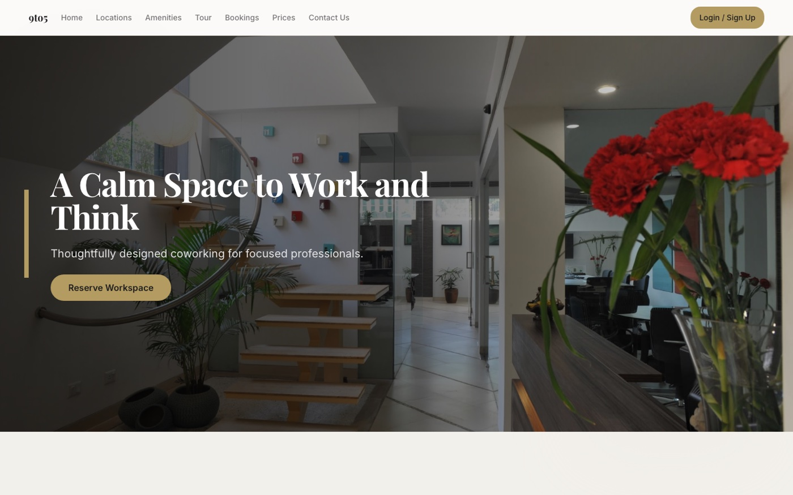

← Index of Work № 07 / 09
WorkspaceHub Building
What if the PRD were a prompt bar? Ten product roles steer one conversation while the AI builds a living, shared prototype in real time.

The PRD is a dead document. It's written once, read reluctantly, and stale by the first sprint review — while design lives in Figma, engineering lives in tickets, and every stakeholder re-explains the product to every other stakeholder, forever. Product development runs on exactly the kind of blank slate this portfolio exists to eliminate.
WorkspaceHub replaces the spec document with a promptable surface. Everyone — PM, design, engineering, UX research, security, marketing, sales, data, CPO, CTO — talks to the same AI, and the AI builds the shared prototype in front of them.
- Ten roles, one conversation Each role carries a persona that shapes the AI's responses, and any role can hand off a question to any other. The security lead's concern lands in the same living artifact as the designer's layout change.
- Answers that render AI responses carry structured JSON that renders inline as interactive screens, specs, and design tokens on a real-time canvas — persisted to Supabase, so the prototype is the single source of truth, not a chat transcript.
- Modes for the whole lifecycle Edit, Review, Present, and Share views; CPO and CTO dashboards for portfolio and system-health context; a customer feedback panel in Share mode. The spec doesn't just live — it holds meetings.
It's an opinion written by a working PM about his own discipline: specs should be living prototypes, not documents. The purest expression of the no-blank-slates thesis in the portfolio.
- Frontend
- Next.js, TypeScript, Tailwind CSS
- Backend
- Supabase — Postgres, Auth, Realtime subscriptions
- AI
- OpenRouter — structured-JSON responses parsed server-side into canvas screens
- Deploy
- Vercel, auto-deploy from main
Actively building. The prototype is deployed and the AI-to-prototype pipeline works end to end: natural language in, rendered interactive screens out, persisted and shared. Open questions on the bench: true multi-user presence, drag-and-drop editing on the canvas, and the export story — PDF specs, token JSON, or generated PRDs for teams that still need the paper.